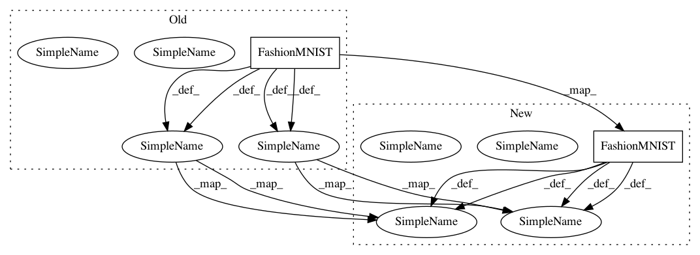

0133188e44399a1c051a76aa3533ead6f2df982d,utils.py,,load_data_fashion_mnist,#,7
Before Change
return nd.transpose(data.astype("float32"), (2,0,1))/255, label.astype("float32")
mnist_train = gluon.data.vision.FashionMNIST(
train=True, transform=transform_mnist)
mnist_test = gluon.data.vision.FashionMNIST(
train=False, transform=transform_mnist)
train_data = gluon.data.DataLoader(
mnist_train, batch_size, shuffle=True)
test_data = gluon.data.DataLoader(
mnist_test, batch_size, shuffle=False)
return (train_data, test_data)
After Change
return nd.transpose(data.astype("float32"), (0,3,1,2))/255, label.astype("float32")
mnist_train = gluon.data.vision.FashionMNIST(
train=True, transform=transform_mnist)[:]
mnist_test = gluon.data.vision.FashionMNIST(
train=False, transform=transform_mnist)[:]
train_data = DataLoader(mnist_train[0], nd.array(mnist_train[1]), batch_size, shuffle=True)
test_data = DataLoader(mnist_test[0], nd.array(mnist_test[1]), batch_size, shuffle=False)
return (train_data, test_data)
def try_gpu():
In pattern: SUPERPATTERN
Frequency: 4
Non-data size: 2
Instances
Project Name: d2l-ai/d2l-zh
Commit Name: 0133188e44399a1c051a76aa3533ead6f2df982d
Time: 2017-10-18
Author: muli@cs.cmu.edu
File Name: utils.py
Class Name:
Method Name: load_data_fashion_mnist
Project Name: d2l-ai/d2l-zh
Commit Name: 35ca74a3e385d6e9407935dd5331a9f53d4e28ef
Time: 2017-10-26
Author: muli@cs.cmu.edu
File Name: utils.py
Class Name:
Method Name: load_data_fashion_mnist